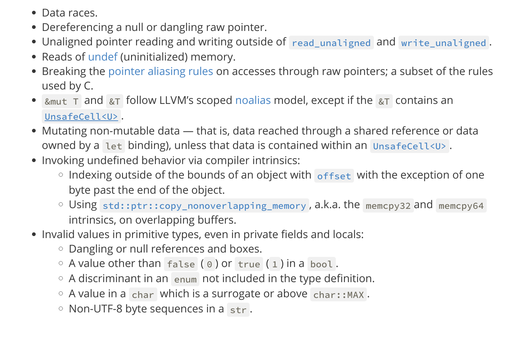

class: middle, center # Reliable Unsafe Rust ### Discovery of Leaky Abstractions in Unsafe Rust --- class: top, left # Motivation The Rust language offers strong memory safety guarentees without garbage collection via a set of [rules](https://play.rust-lang.org/?version=stable&mode=debug&edition=2018&gist=d7db5dd81571cccad6de3b5e4ecad631). Rust, however, does offer an escape hatch: [unsafe](https://play.rust-lang.org/?version=stable&mode=debug&edition=2018&gist=7333f02fddeda49a8b36029b9d1ea344) rust. * Dereference a raw pointer * Call an unsafe function * Implement an unsafe trait * Access or modify a mutable static variable <img style="float: right;" src="rust.png" alt="rust" width="300"> --- class: top, left # Why do we need unsafe? Required: * Memory Mapped IO: ```rust let x: const* u32 = &base; let val = *x.offset(16) ``` * Send + Sync for threads Convenience: * Reference Counted Values * Lockless Data Structures <img style="float: right;" src="deisel.png" alt="rust" width="150"> --- class: top, left # Why is it awful? With enough ingenuity and unsafe code a programmer can break almost all of the guarentees that the rust compiler provides. For [instance](https://play.rust-lang.org/?version=stable&mode=debug&edition=2018&gist=7333f02fddeda49a8b36029b9d1ea344)  --- class: top, left # Safe Abstractions Provides safe API to unsafe code. Examples: `Vec`, `Rc`, `Mutex` For all inputs to a safe API behavior should be defined. An abstraction is leaky if any input to the abstraction can cause undefined behavior. ```rust fn stupid_func(p: usize) -> u32 { let v: *const u32 = p as *const u32; unsafe { return *v; } } ``` --- class: top, left # Current Methods for Reliable Abstractions Testing: * [QuickCheck Reference Based Testing](https://github.com/blt/bughunt-rust) * [Fuzzing (Primarily AFL)](https://github.com/rust-fuzz/afl.rs) Verification: * [Model Checking the Standard Library](http://plv.mpi-sws.org/rustbelt/) Static Anlysis: * [Clippy](https://github.com/rust-lang/rust-clippy) --- class: middle, left # RURE: Symbolic Execution assisted Compiler Idea: Utilize symbolic execution to quantify safe abstraction behavior accross all inputs. Utilize this model of the program to discover bugs leading to undefined behavior. Writing a drop in compiler allows seamless integration with current toolchains and is relatively convenient for accessing the MIR. <img src="cargo.png" alt="rust" width="300"> --- class: middle, left # Architecture <script>mermaid.initialize({startOnLoad:true});</script> <div class="mermaid"> graph LR A[Compiler Driver] -->|MIR|B(Mir Symbolic Interpreter) B --> |SIR|C(AnalysisHandler) C --> |SIR|D(SMT Translator) D --> |SMT|E(Z3) E --> |Maybe Model|C C --> A </div> --- class: top, left # What is MIR and why Target it? MIR is an intermediate representation of Rust that sits between the HIR and the codegen phase. The MIR is as small and simple as possible. [Example](https://play.rust-lang.org/?version=stable&mode=debug&edition=2018&gist=293dc13f2d83e8d8a1a4f8719e73c4cf)